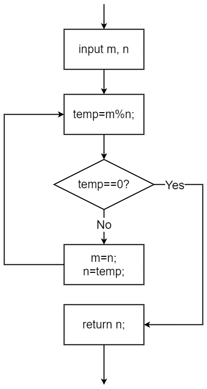

程序设计基础 · 第5次课 · 第2课时
从多任务终端菜单到经典结构化分解，理解“动作型函数、单一职责与自顶向下设计”
社区慢病管理系统终端要完成更多随访任务，代码全塞进 main() 会怎样？
上一课时已掌握数值计算型函数（如 calcBMI），实现公式的封装与复用。
新增“慢病分级评估、综合报告输出、居民交互菜单”：如何避免 main() 臃肿不堪？
使用 void 动作型函数与单一职责原则，实现自顶向下分解与模块化装配。
void 的含义、使用规则与调用禁忌void 动作型函数的区别switch-case 菜单结构组合void。calcBMI(70.0, 1.75) 计算后需要把 22.86 交代给主调程序，因此返回 double。
printReport(22.86) 的任务是向屏幕打印格式化慢病随访分析报告，并不产生一个需要继续参与运算的数字。
void printReport(double bmi)
{
if (bmi <= 0) {
printf("Error: invalid data\n");
return; /* Return early */
}
printf("Report: BMI = %.2f\n", bmi);
}void 表明该函数“不返回任何值”。末尾的 return; 不带表达式，用于立即跳出函数。double / int）double b = calcBMI(70.0, 1.75);
if (isSquare(16)) ...
printf("%f", cylinder(2, 3));✓ 必须或通常作为表达式的一部分出现，可参与赋值、算术或打印。
void）printReport(b); /* Valid call */
/* Common syntax errors: */
x = printReport(b); /* Error! */
printf("%d", printReport(b)); /* Error! */✗ 只能作为一条独立的语句执行，绝不能出现在需要数值的表达式中！
void 函数对比总结| 对比维度 | 有返回值函数（double/int 等） |
无返回值函数（void） |
|---|---|---|
| 核心使命 | 计算或判断：向主调函数交付一个数据 | 执行操作：屏幕输出、格式化打印、状态修改 |
| 首部返回类型 | 具体数据类型，如 double、int |
关键字 void |
return 语句 |
必须写 return expr;，类型需匹配 |
可省略；若写只能是不带表达式的 return; |
| 调用形式 | 变量接收 v = f(...) 或作为表达式因子 |
独立语句 f(...); |
void 函数的语法陷阱与编译诊断💡 课堂互动：同桌两人在 IDE 中敲入报错片段，观察编译器警告信息，验证与 AI 解释的一致性。
weight, height → bmi
纯数学计算，不受界面或语言文本影响。
bmi → band (0/1/2)
社区慢病评判标准（偏瘦/正常/超重肥胖），规则变动仅在此调整。
band → 屏幕排版
终端人机交互，负责控制台美化与健康指导建议展示。
| 函数名称 | 形参列表（输入） | 返回类型（输出） | 职责说明 |
|---|---|---|---|
calcBMI |
double weight, double height |
double |
计算体质指数 BMI，非法输入返回 -1.0 |
classifyBMI |
double bmi |
int |
将 BMI 映射为慢病风险等级：0偏瘦、1正常、2超重肥胖 |
printReport |
double bmi |
void |
调用 classifyBMI 并打印完整图文报告与健康建议 |
int classifyBMI(double bmi)
{
if (bmi <= 0) return -1; /* Invalid data */
if (bmi < 18.5) return 0; /* Underweight */
if (bmi <= 23.9) return 1; /* Normal */
return 2; /* Overweight or obese */
}main()printReport()calcBMI()classifyBMI()教材经典结构化设计：自顶向下、逐步求精、模块划分
main 负责流程协调，不塞入细节void showMenu(void);
void handleMeasure(void);
int main(void)
{
int choice;
do {
showMenu();
scanf("%d", &choice);
switch (choice) {
case 1: handleMeasure(); break;
case 0: printf("Exiting system.\n"); break;
default: printf("Invalid choice, please retry.\n");
}
} while (choice != 0);
return 0;
}
void showMenu(void) {
printf("\n=== Chronic Disease Health System ===\n1. Input weight/height and evaluate BMI\n0. Exit\nChoice: ");
}main()，就能完全理解系统的宏观运行流程！💡 课堂互动：学生体会“计算与 IO 解耦”的深刻内涵：纯逻辑函数具有极高的跨平台可移植性。
void pyramid(int n) 输出对称数字图案，体会“图形化任务的函数封装”。
输入一个正整数 \(n\)（\(1 \le n \le 9\)），输出 \(n\) 行数字金字塔。
要求定义和调用函数 void pyramid(int n) 输出金字塔。
以 \(n = 5\) 为例，仔细观察第 \(i\) 行（\(i = 1 \dots n\)）的字符构成：
| 行号 \(i\) | 前置空格数（\(n - i\)） | 打印内容（数字后带空格） | 循环逻辑拆解 |
|---|---|---|---|
| 第 1 行 | \(5 - 1 = 4\) 个空格 | 1 |
先循环打 4 个空格，再打 1 次 "1 " |
| 第 2 行 | \(5 - 2 = 3\) 个空格 | 2 2 |
先循环打 3 个空格，再打 2 次 "2 " |
| 第 3 行 | \(5 - 3 = 2\) 个空格 | 3 3 3 |
先循环打 2 个空格，再打 3 次 "3 " |
| 第 \(i\) 行 | \(n - i\) 个空格 | \(i\) 次 "%d ", i |
内层双循环：先输出空格，后输出数字 |
#include <stdio.h>
void pyramid(int n);
int main(void)
{
int n;
scanf("%d", &n);
pyramid(n);
return 0;
}
void pyramid(int n)
{
int i, j;
for (i = 1; i <= n; i++) {
for (j = 1; j <= n - i; j++)
putchar(' ');
for (j = 1; j <= i; j++)
printf("%d ", i);
putchar('\n');
}
}void？main。
main 中能写 int res = pyramid(5); 吗？void value not ignored。
如果用户输入 \(n \le 0\)，循环不执行，控制台无任何反应；如果输入 \(n \ge 10\)，双位数宽度变为 2，金字塔斜边将严重错位歪斜！
在函数入口加入卫语句：
if (n < 1 || n > 9) {
printf("Please enter an integer between 1 and 9\n");
return;
}💡 课堂互动：观察 AI 如何分析列宽格式对图形对齐的影响，培养细致的界面控制能力。
gcd(m, n) 与素数判断 prime(m) 的边界与除零审查。
输入两个正整数 \(m\) 和 \(n\)，定义并调用函数 gcd(m, n) 计算它们的最大公约数（Greatest Common Divisor）。

int gcd(int m, int n)
{
int r;
r = m % n;
while (r != 0) {
m = n;
n = r;
r = m % n;
}
return n;
}gcd(18, 12)：返回 6（正常）。gcd(12, 18)：第一轮 \(12 \% 18 = 12\)，自动互换为 \(18 \% 12\)（正常）。gcd(0, 0) 或 gcd(18, 0)：r = m % n; 将直接触发除以 0 致命崩溃（Floating Point Exception / SIGFPE）！
if (n <= 0 || m <= 0) return -1;
prime(m)定义函数 int prime(int m)，当 \(m\) 是素数时返回 1，否则返回 0。
int prime(int m)
{
int i;
if (m <= 1) return 0; /* Numbers <= 1 are not prime */
for (i = 2; i <= m / 2; i++) {
if (m % i == 0)
return 0; /* Found factor, return 0 early */
}
return 1; /* Loop finished, is prime */
}| 输入 \(m\) | 预期返回 | 测试目的 |
|---|---|---|
1 | 0 | 1 既不是素数也不是合数 |
2 | 1 | 最小且唯一的偶素数 |
4 | 0 | 最小偶合数，首轮退出 |
97 | 1 | 较大两位素数，遍历完毕 |
-7 | 0 | 负数边界拦截 |
funpi(e)负责迭代累加并由 fabs(item) >= e 控制精度收敛，向调用者返回 \(\pi\) 的近似值。
若调用者传入 \(e = 0\)，浮点截断导致不可预知循环；若传入 \(e < 0\)，fabs(item) >= e 恒成立，直接引发死循环！
💡 课堂互动：同桌核对 AI 提出的恶魔测试用例，在自己脑海中单步推演各分支的防御表现。
| 任务 | 推荐首部 | 原因 |
|---|---|---|
| 求两数最大公约数 | int gcd(int, int) | 需要取回一个整数结果 |
| 打印数字金字塔 | void pyramid(int) | 执行屏幕输出动作 |
| 判断是否为素数 | int prime(int) | 返回真假（1/0）标识 |
追问：如果把 pyramid 强行定义为 int 并返回 0，有什么代价？（无谓的返回值混淆调用意图）。
calcBMI、cylinder、gcd：纯算术，返回值参与后续处理。
isSquare、prime：返回 1/0，直接用作 if 判定条件。
printReport、pyramid、showMenu：void 类型，完成 IO 输出。
gcd(m, n) 和 funpi(e) 增加防除零、防死循环卫语句switch-case 终端多功能交互系统x，函数 B 能直接读取或修改吗？函数让代码秩序井然，变量让数据各就其位。